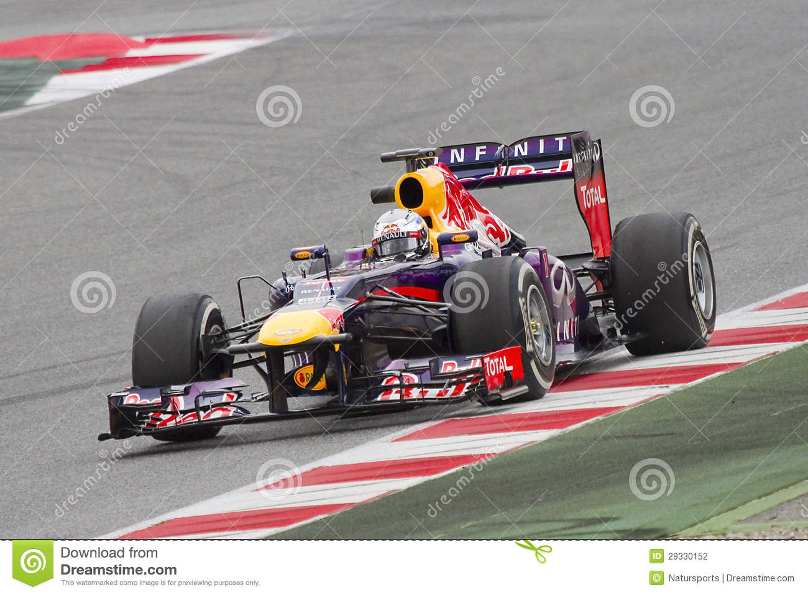
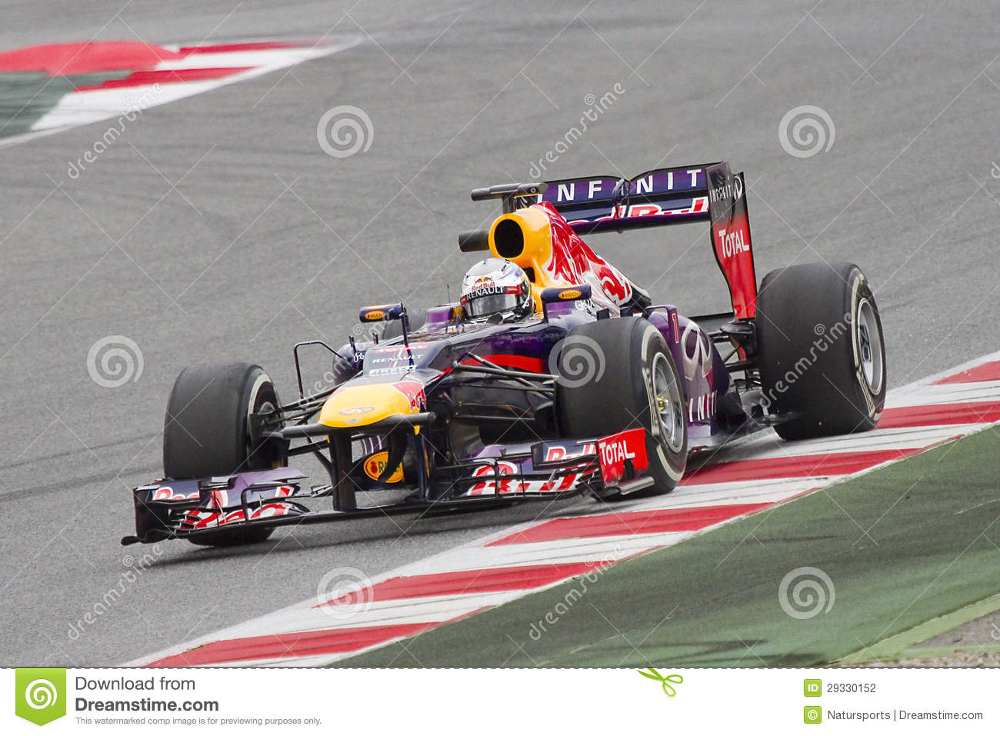

El Red Bull RB9 es un coche de Fórmula 1 diseñado por Adrian Newey para el equipo Infiniti Red Bull Racing.
El coche competirá durante la temporada 2013 de Fórmula 1, siendo sus pilotos oficiales el cuatro veces campeón de Sebastian Vettel
y su compañero de equipo Mark Webber.

El Ferrari F2004 fue un monoplaza con el que la Scuderia Ferrari compitió en la temporada 2004 de Fórmula 1. Fue diseñado por Rory Byrne, Ross Brawn y Aldo Costa.
En gran medida sobre el F2003-GA del anterior campeonato, el F2004 continuó la racha de éxito del equipo había disfrutado desde 1999, ganando el sexto Campeonato
de Constructores y el quinto Campeonato de Pilotos consecutivo.


El Mercedes AMG F1 W10 EQ Power+ es un monoplaza diseñado por Mercedes-AMG Petronas Motorsport para competir en la temporada 2019 de Fórmula 1. La unidad de potencia, el sistema de transmisión de ocho velocidades y el sistema de recuperación de energía son de Mercedes. El coche es conducido por el campeón defensor Lewis Hamilton y el finlandés Valtteri Bottas. Fue presentado el día 13 de febrero en el circuito de Silverstone.